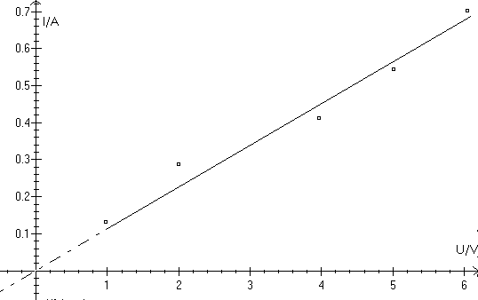

Som eksempel tænker vi os, at vi har målt 5 sammenhørende værdier for spænding og strøm for en resistor:
| U/V | 0.98 | 2.00 | 3.97 | 5.02 | 6.05 |
| I/A | 0.130 | 0.287 | 0.412 | 0.543 | 0.702 |
Ved hjælp af programmet Datalyse vil vi afbilde målepunkterne i et koordinatsystem og tegne karakteristikken:
I Windows vælges programmet Datalyse.
Når programmet er indlæst, kommer der et koordinatsystem frem på skærmen, og Datalyse er klar til brug:
På skærmen ses nu koordinatsystemet med de 5 målepunkter. De liniestykker, der forbinder punkterne skal fjernes. Det gør man ved at klikke på knappen type i søjlen af knapper til venstre på skærmen, og dernæst vælge linietype 6 (usynlig linie) i det vindue, der åbnes. Vælg også aksetype 4 (ubrudte akser) – og luk vinduet med et klik på OK-knappen. Nu ses målepunkterne alene på skærmen. Evt. kan X-aksen flyttes, så den skærer Y-aksen i dennes nulpunkt. Dette gøres ved at klikke på Skaler akser og skrive 0 i origo-feltet for Y-aksen.
For at få tegnet den bedste rette linie gennem (0, 0) klikkes på knappen Reg (Lineær regression). Da karakteristikken for en resistor skal gå gennem (0, 0) vælges Type ax i regressionsvinduet. Programmet tegner herved linien. Liniens ligning kan ses nederst på skærmen.
Grafen kan udskrives på en printer, ved i menuen Filer at vælge Udskriv Graf. Hvis man klikker i feltet Udskriv Memo i udskriv graf -vinduet, vil liniens ligning komme med på udskriften. Det kan dog være nødvendigt først at åbne memo-vinduet (Vis | Memo) og slette irrelevante oplysninger inden udskrivningen. Det er også muligt at tilføje en tekst i memo-vinduet, som ligeledes bliver udskrevet på printeren sammen med grafen.
Til sidst skal det nævnes, at grafen kan kopieres over på klippebordet (Rediger | Kopi). Herved gemmer computeren en kopi af grafen, der kan kopieres ind i et tekstbehandlingsprogram, f.eks. WORD. Dette gøres inde fra tekstbehandlingsprogrammet ved at vælge Rediger | Indsæt. Grafen kan blive temmelig stor, men man kan formindske grafvinduet i Datalyse før kopiering til klippebordet.
Følg nøje fremgangsmåden i de foregående afsnit og udskriv til sidst grafen på printeren. Sammenlign med grafen side 3.
En væskes massefylde måles ved at hælde ca. 10 mL af væsken i et måleglas og derpå veje måleglasset med indholdet. Dernæst hældes yderligere ca. 10 mL væske i måleglasset og en ny vejning foretages. Således fortsættes. Antag, at resultatet bliver følgende:
V/mL |
9.9 | 20.1 | 30.0 | 38.7 | 50.5 | 59.8 | 71.0 | 80.4 |
m/g |
88.2 | 96.3 | 105.8 | 110.0 | 119.5 | 125.1 | 134.2 | 143.6 |
Brug Datalyse til at afbilde målepunkterne i et koordinatsystem og tegne den bedste rette linie. Vælg en brudt Y-akse, og vælg en passende minimumsværdi på aksen (Skaler akser).
Besvar herved spørgsmålene: Hvad er væskens massefylde, og hvad er massen af måleglasset? Udskriv grafen og dens ligning på printeren.
Et element belastes ved at lade det afgive strøm gennem forskellige resistorer. Sammenhørende værdier af strømstyrken og polspændingen måles. Resultatet er følgende:
| I/A | 0.105 | 0.210 | 0.291 | 0.410 | 0.503 | 0.596 |
| Up/V | 1.476 | 1.440 | 1.408 | 1.376 | 1.342 | 1.311 |
Brug Datalyse til at afbilde målepunkterne i et koordinatsystem og tegne den bedste rette linie. Vælg en brudt Yakse, og vælg en passende maksimumsværdi på aksen (Skaler akser).
Besvar herved spørgsmålene: Hvad er elementets elektromotoriske kraft og indre resistans? Udskriv grafen og dens ligning på printeren.
Indtast liniens ligning i funktionsvinduet (klik først på f(t)). Find funktionens nulpunkt og bestem herved elementets maksimalstrøm.
Brydningsloven i en halvcirkelformet glasklods.
I et forsøg er målt følgende indfaldsvinkler i og brydningsvinker b.
i/° 0 10.0 20.0 30.0 40.0 50.0 60.0 b/° 0 6.5 10.4 20.0 25.5 31.0 36.0
Brug Datalyse til et bestemme glassets brydningsindeks. Indtast først i og b i to søjler i tabellen i Datalyse.
I søjle c beregnes sin(i). Husk, at Datalyse regner i radianer. Forskriften skal altså være sin(a*pi/180). Tilsvarende beregnes sin(b) i søjle d.
Herefter tegnes en graf for sin(i) som funktion af sin(b) og vha. lineær regression beregnes brydningsindekset.
